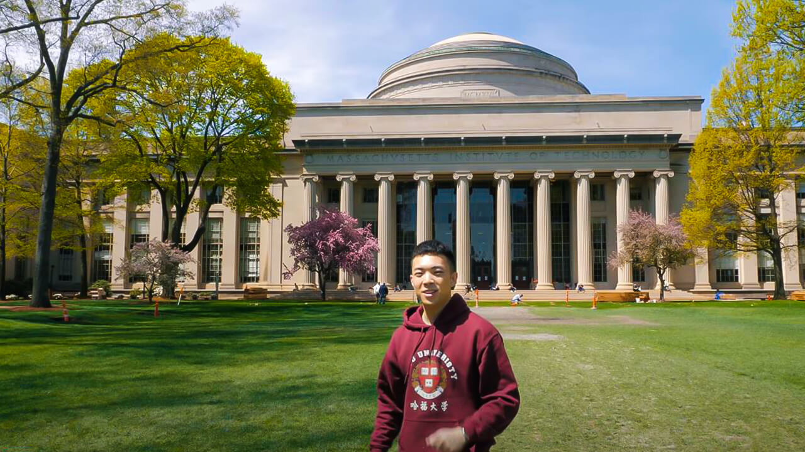

MIT
Massachusetts Institute of Technology
About Us
The Massachusetts Institute of Technology is a world-renowned institution committed to advancing knowledge and innovation, shaping the leaders of tomorrow in the fields of science, engineering, and technology to transform the world of the future.
Nos Programmes

Arts et Sciences des Médias
Plongez dans l'intersection de la créativité et de la technologie avec nos programmes innovants en Art et Sciences des Médias. Développez des compétences en design interactif, médias numériques et technologies émergentes pour façonner l'avenir de la communication et de l'expérience humaine. Explorez de nouvelles façons d'interagir avec le monde à travers les arts, les médias et la technologie.

Intelligence Artificielle
Explorez le futur de la technologie avec nos programmes en Intelligence Artificielle. Apprenez à développer des systèmes intelligents capables de résoudre des problèmes complexes, de comprendre le langage humain, et d'imiter les processus cognitifs. Que ce soit en machine learning, en robotique, ou en traitement du langage naturel, vous serez formé pour repousser les limites de ce domaine en pleine évolution.

Ingénierie et robotique
Plongez dans l'univers de la robotique et explorez la conception, la programmation et l'application des robots dans divers domaines. À travers nos programmes spécialisés, vous apprendrez à intégrer l'intelligence artificielle, les systèmes mécaniques et les technologies de capteurs pour créer des robots autonomes et interactifs. Développez des compétences pratiques pour innover dans des secteurs allant de la fabrication à la santé, et participez à la transformation numérique des industries avec des solutions robotique avancées.
Témoignages
 "Étudier au MIT a été un tournant dans ma vie. L'approche innovante et la collaboration avec des chercheurs de classe mondiale m'ont permis de repousser mes limites et d'acquérir des compétences uniques qui m'ont préparée à un avenir brillant."
"Étudier au MIT a été un tournant dans ma vie. L'approche innovante et la collaboration avec des chercheurs de classe mondiale m'ont permis de repousser mes limites et d'acquérir des compétences uniques qui m'ont préparée à un avenir brillant."
 "Le MIT m'a offert des opportunités exceptionnelles pour développer mes compétences en recherche et en innovation. Les projets pratiques et la culture collaborative sont inégalés, et chaque jour est une occasion d'apprendre et de créer."
"Le MIT m'a offert des opportunités exceptionnelles pour développer mes compétences en recherche et en innovation. Les projets pratiques et la culture collaborative sont inégalés, et chaque jour est une occasion d'apprendre et de créer."
"L'environnement d'apprentissage au MIT est stimulant, avec des ressources incroyables et des mentors dévoués. Ce qui m'a vraiment impressionnée, c'est la passion de chaque étudiant pour son domaine, créant ainsi une atmosphère d'excellence et de créativité."
"Le MIT ne se contente pas de former des experts, il forme des leaders. L'influence de la recherche interdisciplinaire et les discussions avec des professeurs et des collègues talentueux m'ont permis d'élargir mes horizons et de voir des solutions innovantes aux défis mondiaux."